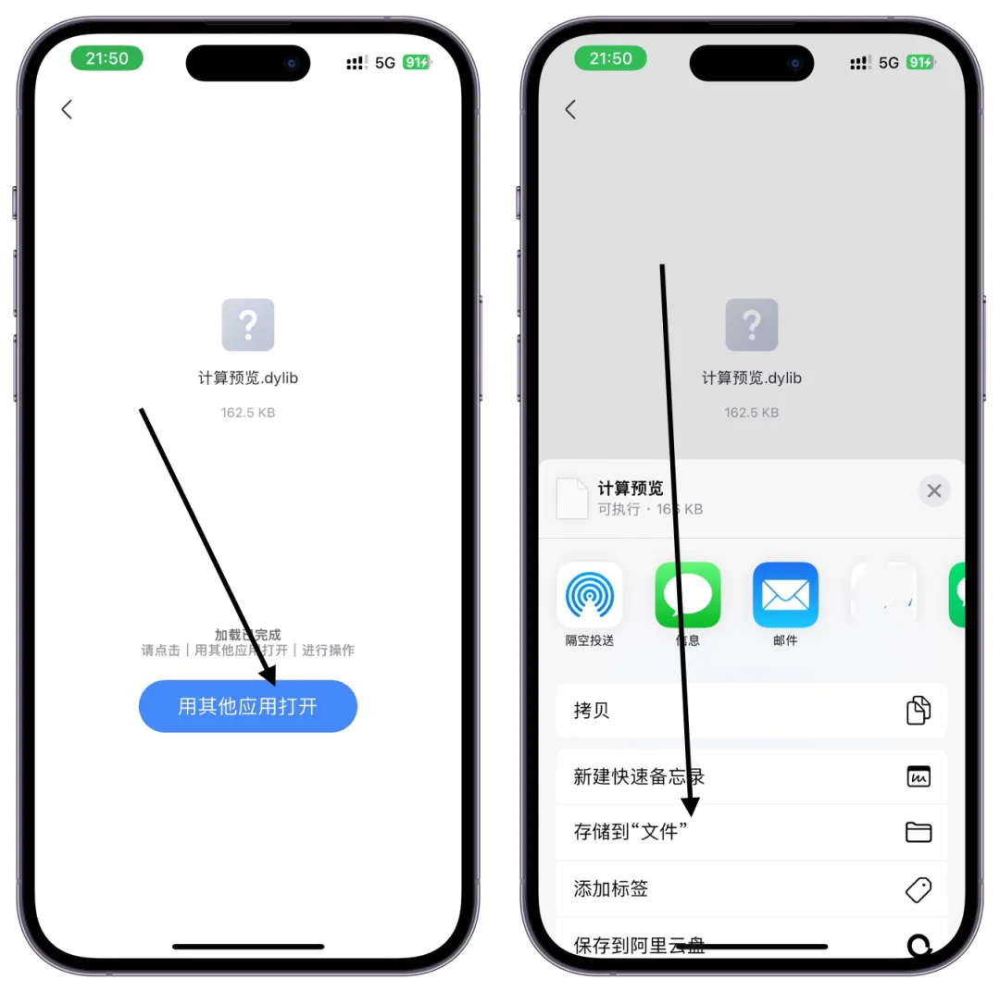

最新发布的神器，也是巨魔专用，没有安装巨魔的是用不了的 还没安装巨魔的 可以看这里教程 巨魔安装教程
完全免费支持注入dylib动态库到AppStore应用支持列表应用搜索功能支持删除单个dylib动态库支持一键推出所有dylib动态库支持筛选已注入应用
支持注入的软件有
- AppStore应用
- 巨魔安装应用
- 系统自带应用
- TrollFools是什么，有什么用
- 目前作者已经更新到2.4.1 在新的版本中，作者完善了一些动画细节，并且修复「计算器」、「邮件」等 App的修补支持，也为目标二进制添加修补 LC_RPATH
- 注入有什么用？
- 注入的插件，可以实现APP增强或者多加新功能，等等，比如大家最讨厌app广子，就可以注入去广插件，实现让App无关模式，还你纯净模式，再简单说，手机自带的计算器，是无法看历史计算记录，使用注入插件就可以实现，下面再实际操作， 非常简单一看就会只要是已经安装巨魔的就行
下载TrollFools IPA和插件
点击上面迅雷网盘进入-巨魔专区-TrollFools ＋插件包即可下载
或者在官网下载也可以：TrollFools 官方网站：
https://github.com/Lessica/TrollFools
V2.8.15更新内容
从共享表中接收.dylib文件，并将其注入到指定的应用程序中。
错误修复
避免在盒子里重命名文档。
删除广告并防止应用程序崩溃。
V2.7.10更新内容
新功能：新增长按APP选单【清除缓存】
替换掉SwiftUI原生搜索框，解决部分设备粗体文本崩溃 (无解)
其他变化：
修复隔空投送deb文件时软件不显示问题
修复部分设备出现未捕获错误问题
优化文件共享判断
优化iOS14搜索框与分类排版出错
优化搜索框与分类对齐
V2.7-9更新内容
新功能：调整权限：将所有软件所生成的文件统一并入沙盒目录
左上角按钮新增：清除缓存项（一键清空所有软件产生的临时文件）
支持文件导入及AirDrop直接注入：导入(dylib,deb)文件后会看到一个弹窗，选择"注入"后点击任一软件直接注入
新增了一个URLScheme可供快捷跳转【TFools://】
V2.7更新内容
新增功能：添加分类功能（全部、用户、巨魔、系统）应用程序
支持手势切换选择（左右滑动）
改进功能：添加了iOS14搜索框（之前忘记）
其他变化：优化排序图标为圆形
实际操作教程
上面网盘里面下载TrollFools 安装包，保存到自己网盘，然后打开自己网盘，点击下载，然后选择其他应用打开，选择TrollStore巨魔打开
点击lnstall，即可导入成功桌面就自动就有了，然后点击TrollFools，选择open，也可以再桌面点击打开
打开TrollFools就可以看到已经安装的应用的，主界面是应用列表，支持搜索。找到想注入的应用，点击进入，就以计算机为列
注意：deb格式不被支持哦！只支持注入dylib格式的插件，dylib
dylib插件保存自己网盘，然后下载，点击，其他应用打开，保存到文件

保存到文件后，打开TrollFools，首页搜索计算器，点击，选择注入

找到我们保存到文件的对应插件，勾选，然后右上角打开即可，等待注入完成即可

打开我们的计算器，计算，是不是和平时的不一样了，还有左上角可以查看历史计算记录，这只是随便举例一个，如果你要删除注入的插件点击推出即可，可以批量推出也可以只删除某个插件，上面网盘里面收集了很多插件，就不介绍了，你们懂的，都是好东西，还要啥越狱呀，一个TrollFools就搞定了 YYDS，本文非常详细了，给个赞吧， 不允许还有人不会 真的非常简单